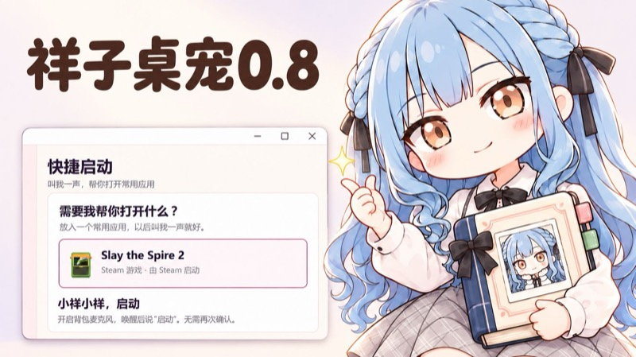
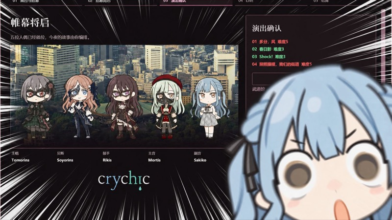

陪你过普通的一天
桌面散步、喝茶、语音互动，
忙碌的时候，她也在身边。
一个会陪伴你的虚拟桌宠，
也是一场可以慢慢玩的生活小游戏。
不必赶进度，按自己的节奏相处就好。
桌面散步、喝茶、语音互动，
忙碌的时候，她也在身边。
打工、商店、股票和人偶剧场，
还有热闹的天素罗牧场。
慢慢解锁共同的回忆和图鉴，
让每一次相处留下痕迹。
选一个方便的下载方式就好。夸克与百度提供双端文件，谷歌网盘为 Mac 版。
安装小提示Windows 请下载完整压缩包后在本机解压，勿用网盘云解压或从压缩包直接运行。遇到语音报错？查看 FAQ →Mac 版适用于 Apple Silicon（M 系列芯片），macOS 13 及以上。安装包内附安装说明、视频教程和 打开SakikoPet.command，首次打开遇到系统拦截时，请按包内说明操作。

2:15
2:57试试缩短关键词、换成物品名，或清除筛选查看全部问题。
先让小祥来到桌面，再按自己的节奏慢慢玩。
SakikoPet 是免费的同人桌宠，也是一款低压力的经营小游戏。首次运行不需要登录账号。请从本站的下载区获取文件，不要购买所谓付费激活版。
目前公开介绍以 0.8 为准；旧版本视频和旧手册中的限制可能已经变化。Windows 与 macOS 的界面和系统操作会有所不同。
SakikoPet.exe。不要在压缩包预览窗口里直接运行，也不要只拖出 EXE。Voice 文件夹和其他随包文件。可以给 EXE 创建桌面快捷方式，但不要单独搬走它。Windows 版面向 64 位 Windows 10 / 11，旧版 Windows 7 不在支持范围。
SakikoPet.app 拖到 Applications，等待复制完成。打开SakikoPet.command。请确认文件来自可信来源，只针对这个安装包处理；不需要关闭 Mac 的全局安全保护。安装完成后可从「应用程序」打开，DMG 可以推出。
左键点击祥子会互动；按住左键可以拖动她；右键点击打开功能菜单。先试试「状态」「打工」「商店」「背包」，不需要一开始就把所有玩法解锁。
Windows 可从右下角托盘图标选择「找回祥子」，也可检查是否隐藏或暂停；双击托盘图标可以切换显示。Mac 从菜单栏里的祥子图标找回相关操作。不同版本的菜单名称可能略有区别。
不想经营时，也可以只让她安静陪伴。进度不需要赶。
卡在第三阶段？先把点数、商品和突破互动分开检查。
界面里的「信任度」就是这里说的好感进度。正常桌面陪伴会逐步积累：第一至第三阶段每 5 分钟约 1 点，第四阶段每 10 分钟约 1 点。这是有效陪伴时间，不是把程序关掉后按现实时间补算。
送礼、喂蛋糕也能增加信任。先到商店购买，再到背包执行可用的赠送或使用操作；不要把「已经买了」和「已经送给她」混为一谈。暂停、隐藏和特殊活动的计时规则可能不同，不建议靠反复重启刷进度。
| 目标阶段 | 条件 | 最后一步 |
|---|---|---|
| 第二阶段 | 信任度超过 50 | 到状态页聆听祥子的话 |
| 第三阶段 | 信任度超过 100 | 完成对应突破互动 |
| 第四阶段 | 信任度达到 300，且已购买共同企划书 | 回到状态页完成突破互动 |
点数达标不会自动跳阶段。状态里出现「聆听祥子的话」后，需要亲自点它、完成互动。第一次突破还会询问你希望她怎么称呼你。0.8 的信任上限为 400，目前最多第四阶段。
还需要在商店购买「共同企划书」，然后回状态页完成突破。
单纯继续挂机、等到 400，或只购买了人偶剧场企划书，都不能代替这一步。突破不会扣掉信任点数。
共同企划书需要剧场粉丝超过 10,000才会出现，不是余额达到 10,000，也不是累计打工收入达到 10,000。刚好 10,000 粉丝也还没达到「超过」条件。
如果已购买，请确认信任达到 300、当前是第三阶段，再到状态页完成「聆听祥子的话」。她忙碌时先结束当前活动。已经买过的商品也可能显示为已售罄；可结合背包和购买状态判断，不必反复购买。
| 物品／玩法 | 解锁条件与入口 |
|---|---|
| 炒股 | 累计打工收入达到 10,000 日元；右键进入 |
| 麦克风 | 关系第三阶段后，商店购买 1,000 日元；背包开启 |
| 人偶剧场企划书 | 关系第三阶段后在商店购买；背包使用 |
| 祥子专用红茶杯 | 关系达到第二阶段后，商店出现 |
| 共同企划书 | 剧场粉丝超过 10,000；商店购买 15,000 日元 |
| 神秘笔记本 | 剧场让 MyGO!!!!! 登场演出后，商店出现 |
| 天素罗与牧场 | 剧场让 SOYORINS 登场演出后，购买天素罗，获赠牧场许可证 |
| Oblivionis 演出服 | 剧场让 CRYCHIC 登场演出后，商店购买 200,000 日元 |
| 共同的回忆 | 完成第四阶段突破后由祥子赠送；背包可再次打开 |
| 任务清单／小床 | 第一阶段起可购，分别为 500／7,500 日元 |
这些是解锁线索，不是输入角色名字就能领取。剧场相关条件需要实际组队并登场演出，之后再查看商店；具体可购买、可使用状态以游戏里显示为准。
草莓蛋糕在商店购买，到背包使用；除了增加信任，还会让接下来的三次打工得到加成。这不是永久工资升级。
如果还有蛋糕加成没用完，她可能会拒绝继续吃。先正常打工消耗剩余次数，再喂下一块。背包里有蛋糕与身上还有蛋糕加成是两件事。
0.8 手册中，这件 168 亿日元的商品仍没有实质性玩法效果。不要为了它期待立即解锁特殊结局、第四阶段或新功能；第四阶段需要的是「共同企划书」。是否扩展效果以以后公开更新为准。
打工、剧场、牧场和桌面上的小工具。
右键祥子选择「打工」，选好时长后开始；选择不限时打工则需要自己结束。到点返回，或右键选择结束，结算后查看本次收入和状态里的余额。
收起计时窗口不等于结束工作。暂停或隐藏时不把相应时段计为打工时间。普通祥子有不同工作，OB 形态还有「写小说」；弹琴和打工不能同时进行。
累计打工收入达到 10,000 日元后解锁。右键进入炒股界面，选择股票和投资金额；投入的本金在到期结算前会被冻结，因此不能再当作可花余额。
等待本轮到期，按界面提示领取结算后再进行下一轮。投资有涨有跌，不保证盈利。打工时遇到的股票 NEWS 可以作为下一轮判断线索；没有新闻也不代表稳赚。
剧场的「？」按钮有详细规则。除祥子外，完成演出的成员会离队，已演出的候选人不能重复使用；尚未使用的候选人不会因为关窗口就消失。
先选阵容能胜任的舞台，把招募到的候选人灵活分配到不同场次。高级场地租金更高，不代表当前阵容更容易赚钱。歌曲重视的五维属性和阵容匹配程度会影响表现。
流水超过场地租金算成功，达到该舞台的大成功条件还能获得额外流水加成。演出积累粉丝，粉丝又会开放更多舞台和招募方式。CRYCHIC、Ave Mujica、MyGO!!!!! 等特定完整阵容也有组合效果；Ave Mujica 需要的是 Oblivionis，普通 Sakiko 不能直接替代。
商品按演出经历、成功次数、粉丝和特定角色出场逐步出现。祥子参与成功演出 1 次后可出现沙锤，10 次后出现 ROLAND VR-730，50 次后出现 ROLAND FA-08；首次剧场成功还会开放魔法骰子。
一些舞台的大成功会带来对应商品，特定角色／组合登场会解锁笔记本、天素罗或演出服。解锁后仍要回商店购买；商品描述会说明它是被动效果，还是要在背包使用。
先在人偶剧场组成 CRYCHIC 并实际登场演出，再到商店购买「Oblivionis的演出服」，价格为 200,000 日元。到背包使用一次换装，再使用一次恢复普通祥子。
OB 有不同的点击互动和「写小说」打工，也能弹琴。重启后会恢复普通形态。OB 目前会回应语音唤醒，但不执行后续那句指令；要用截图、快捷回复、music 或启动，请先换回普通装束。
0.8 的牧场容量是八只。后续领养、饲料和饲养员都有费用，操作前看清余额与价格。
养育天素罗会积累观光收入，记得在牧场领取。饲养员按小时收费，不同饲养员各有说明和能力；当前饲料、库存及饱腹度要一起留意，不要只看拥有几包薯片。
收养客人会按需求报价，先比较客人要求、天素罗情况和报价，再决定是否让伙伴离开。图鉴里的最高收养价格记录的是实际成交价，只查看报价不会刷新纪录；养出过的种类和成年大小也会逐步记录。状态的收支页可查看牧场账本。
.mp3 或 .wav 放入打开的 songs 文件夹。不要只改文件扩展名：把其他音频改名为 MP3 不会真的转换格式。播放器可以最小化；想结束弹琴，请右键祥子选择「退出弹琴」。Mac 请使用按钮打开实际歌曲目录，不要照搬 Windows 的程序旁路径。
第一阶段起可在商店花 500 日元购买，背包使用后编辑。最多 20 条，每条最多 20 字；拖左侧手柄调整顺序，确认后显示为桌面浮窗。
完成时勾选，误点可以取消；已完成任务会进入「完成回顾」。关闭浮窗只是收起，不会清空全部任务。它是记录你的待办，不是完成后自动发钱的游戏任务系统。
第一阶段起可购买小床，7,500 日元。背包使用后拖到喜欢的位置，再把普通祥子拖上去松手，她就能睡觉。左键叫醒后，等她说完话再下床。
睡着时可以连床一起移动；右键床或再次使用背包物品可以收起。不要放到任务栏／程序坞下面。重启后床先收回背包，再摆放时会记住上次位置。
第四阶段突破时祥子会赠送「共同的回忆」，说完后点击气泡里的小图标收下。以后从背包使用回忆册即可反复查看；临时错过赠送不代表永久拿不到。
0.8 包含 24 张回忆。未经历的事件会以问号和提示展示，已解锁图片可点开看大图，点外侧或按 Esc 返回。旧存档只能补录有真实记录的经历，部分事件可能需要再体验一次；不要删除存档来“刷新回忆”。
这些是第四阶段后的偶发日常，不是每次点击都能强制触发。让她穿普通装束、结束活动并回到空闲；按事件条件收好回忆册，关掉商店、背包、牧场等窗口，再给她一点时间。
夜间可能问候或打瞌睡。答应借鼠标后，三秒内主动把鼠标递到手边小圈；没递过去就取消，不会突然抢走鼠标。睡着后动鼠标可叫醒；让她去沙发休息需要已有沙发。牧场有天素罗时可能来求摸摸；长时间没有键鼠操作时也可能触发自搜。白天、忙碌、暂停或不满足条件时，等多久也不一定触发。
先唤醒，等她回应，再说一条指令。
工作、弹琴、特殊互动或 OB 形态都可能影响接收；一次只说一件事。Mac 还需按系统提示允许麦克风权限。离线语音识别与可选的 SoVITS 合成组件不是同一套功能。
唤醒先试「祥子祥子」「小祥小祥」；手册也列出日语「さき（saki）」，识别效果会受口音与麦克风影响。回应后约有 5 秒说下一句。
0.8 识别的是约定指令，不是自由聊天大模型。不支持“别打开”这类否定理解，也没有语音结束舞台、结束打工或打开牧场的通用指令。具体说法见下方完整语音指令表。
在人偶剧场让 MyGO!!!!! 登场演出后，商店会出现神秘笔记本，价格 5,000 日元。购买后在背包使用编辑。
安慰、敷衍、拒绝、发癫、夸奖共五类，每类最多八条，每条最多 200 字。写好后点击「让祥子记下来」，再点好目标聊天输入框、唤醒她并说对应回复指令，她会随机挑一条输入。
她不会帮你按发送。你自己开始打字或切换窗口／输入位置时会停止；同一窗口内更换聊天对象或挪动光标未必能被可靠发现，输入期间先别切聊天，发送前检查内容。Mac 对跨应用输入可能需要辅助功能权限；目标输入框要真的处于编辑状态。
说截图指令后，她会摆姿势并伴随快门声截图，保存成功后才回应。Windows 手册说明会拍整个桌面，包括其他显示器，图片放在程序目录的 screenshot 文件夹；没有文件夹时会创建。
Mac 使用本机截图实现与数据目录，需要允许屏幕录制，实际位置以成功提示为准。截图前留意屏幕上的聊天、密码、个人文件等内容；保存失败时检查权限、剩余空间和目标目录是否可写。
第四阶段、普通装束且空闲时，先开启背包麦克风，唤醒后说 music。不需要先遇到她的夜间邀请；她会戴墨镜、拿沙锤，然后循环播放《朋友的酒》并进入桌面舞台。
左键点舞台上的祥子打开控制浮窗，调音量或点明确的结束按钮。舞台音量与说话、弹琴分开调。Mac 关闭音量浮窗会继续蹦迪，再点祥子可重开；Windows 的关闭行为以当前版本为准，想确保停止就用结束舞台按钮。
桌面舞台会绘制用于动画的图标层，效果依赖当前桌面、系统权限和版本实现。桌面图标仍可双击打开；需要拖图标或使用桌面右键菜单时，先结束舞台。没有桌面图标的全屏空间不代表音乐和角色动画必须停止。
天素罗队伍不是所有版本都一开始出现，通常要等音乐播放一会儿，并确认牧场里已有伙伴。Mac 的图标效果还依赖屏幕录制／辅助功能；具体是否支持、是否可用，以本机提示为准，不要为了动画关闭系统的全部安全保护。
第四阶段打开「状态 → 快捷启动」，先放入常用应用，再开启麦克风、唤醒后说「启动」。一次记住一个目标，可替换或清除。
Windows 支持 EXE、LNK 快捷方式和 Steam 游戏的 URL 桌面快捷方式；带启动参数的程序优先使用原快捷方式。Mac 选择本机应用，不能直接使用 Windows EXE。目标被移走或权限不允许时需要重新选择，不会按你口述的任意名字猜应用。
不必为了普通桌面陪伴、预录台词或麦克风指令专门安装它。SoVITS 是独立的本地日语语音合成组件，不是麦克风识别，也不会让 0.8 自动获得自由聊天能力。
组件面向 Apple Silicon、macOS 14 及以上；1.0.1 安装到当前用户目录，无需管理员授权。首次打开 PKG 若被拦截，在「系统设置 → 隐私与安全性」选择「仍要打开」。是否能在桌宠里生成语音，取决于软件版本是否开放相应入口；公开 0.8 尚未开放动态合成，不能按 Dev 预览说明寻找玩家按钮。
先保留原文件和存档，再按提示检查。
如果用过网盘云解压，请先重新下载完整压缩包，在电脑本地完整解压。
例如报错中出现 …\Voice\SakikoVoiceWorker.exe、系统找不到指定的文件，或路径位于 AppData\Local\Temp、带 .zip 的临时目录，常见原因是从压缩包预览里直接运行、云解压后只下载了部分文件，导致语音工作进程没有完整落地。
Voice/SakikoVoiceWorker.exe 是否存在，再从新文件夹运行 SakikoPet.exe。云解压是可能原因之一，不是所有语音报错的唯一原因。文件齐全仍失败时，请附完整错误文本、版本、系统与复现步骤反馈，别只截图最后一行。
先区分「识别进程启动失败」「麦克风没输入」和「音频播放没声音」。文件齐全不代表麦克风已开启：检查背包监听、Windows 默认输入设备和应用麦克风权限；台词没声则再检查应用音量、系统混音器和输出设备。
用本站提供的完整对应 Windows 安装包，不混用其他版本 Voice 或从 Mac 包复制组件。仍失败时保留原始错误和运行日志供反馈；不要靠删存档或随机覆盖模型排查。
精确识别需要可见的底部程序坞，以及辅助功能、屏幕录制权限。到桌宠设置检查授权，再到 macOS 对应权限页核对当前安装的 SakikoPet；授权后按系统提示重新打开。
程序坞自动隐藏、位于侧边、未显示或无法可靠识别时，范围会锁定整个屏幕，让她在屏幕底部行走，这是回退行为。全屏应用里也使用整屏范围，不把看不见的程序坞当边界。
较早的安装包切换行走范围需要重启，后续已修为即时生效；请以实际下载版本为准。更换 App 后不要只看旧条目的勾选，也不要自行重置所有隐私权限。
按你使用的功能授权即可：麦克风用于本地唤醒和语音识别；辅助功能用于跨应用输入等操作；屏幕录制用于桌面捕获、截图和部分程序坞／舞台识别。
普通陪伴不需要把所有功能都开启。麦克风还要在背包主动开启；0.8 的唤醒识别是离线处理，不是把语音发给在线聊天模型。权限被拒绝时，对应功能可能不可用，先查看应用里的具体提示。
在状态／设置的偏好里调整说话音量与说话间隔。调低台词音量不会降低工资；桌面舞台和弹琴的音量要在相应控制界面里分别调整。
如果想暂时停止全部活动，可使用暂停或隐藏；这些状态会影响部分活动和计时，与单纯调低声音不同。
截图先遮掉个人路径、聊天内容等隐私。保留原存档与报错记录，不要为了“修一下”先清空游戏。可通过版本视频下的评论或作者公开渠道反馈。
替换程序不等于删除存档，搬家前先备份。
正常更新时，存档与程序分开保存。先正常退出旧版，再安装或解压新版，不要同时运行两个版本。Mac 用新 App 替换旧 App，通常会继续读取同一系统用户下的正式存档；Windows 搬动程序文件夹也不会自动变成新进度。
更新前建议完整备份。不要删除 Application Support 或 LocalAppData 下的游戏数据，也不要把正式版与 Dev 的独立数据目录混在一起。歌曲、截图等文件的保存方式与游戏进度不同，需要自行保留。
Windows 主存档通常位于当前用户的 %LocalAppData%/SakikoPet；部分旧模块可能有独立目录。Mac 正式存档位于 ~/Library/Application Support/SakikoPet.Mac。它们不在 App 包或 EXE 本身里面。
只复制程序不会自动迁移进度。跨电脑前先完整备份；不要只挑一个 commerce 文件覆盖，因为余额、库存、结算和阶段记录需要保持一致。Mac 的 Dev 存档独立于正式版。
已包含迁移功能的 Mac 包，可在「设置 → 权限与存储 → 存档备份与恢复」操作。导出要设置密码，密码无法找回；加密文件保存成功后才询问是否备份、清空并重启，选择保留则不清空本机进度。
导入会替换游戏进度，先备份旧档并要求确认，完成后重启；偏好、大小、音量、权限和应用绑定保留。同一存档编号在本机核销，成功后还会向选中的加密文件回写已导入标记；已标记文件不能再次导入。导入前的副本不具有联网全局核销保证。
旧 0.8 包可能没有入口。Windows 是否支持取决于对应安装包；目前不能承诺两端已经完成双向互导验收。不要直接把 JSON 改后缀为 SPET，也不要把可编辑开发文件当玩家导入文件。
先别删。正常退出程序，备份完整数据目录与报错，再反馈当前版本和触发过程。删除单个经济或结算文件，可能让进度、余额与事务记录不一致。
不支持的未来存档版本、权限不足和真正损坏是不同问题；不要把它们都当成空档处理。升级后打不开时也先保留旧数据，按作者确认的恢复步骤操作。
日子还长，我们慢慢来。
和小祥开始今天